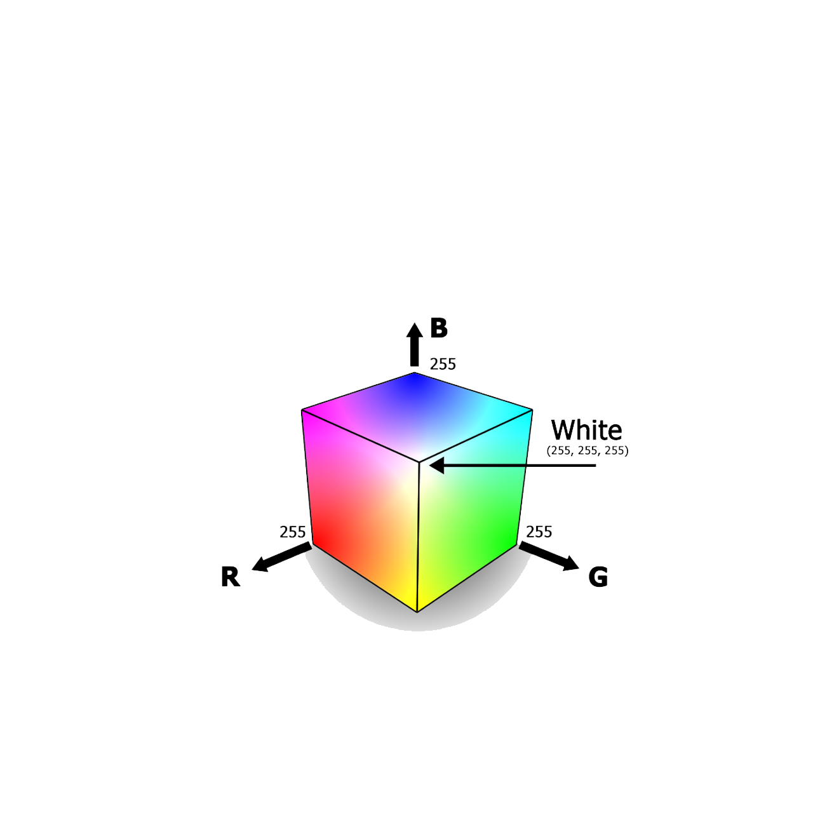

Lo spazio RGB

Dopo aver applicato le varie trasformazioni per cercare di rendere più percettive le immagini, è necessario visualizzare il risultato in maniera corretta sugli schermi. Pertanto è necessario trasferire da LMS a RGB e lo si fa tramite matrice di conversione che permette di restituire i dati nello spazio coerente digitale.